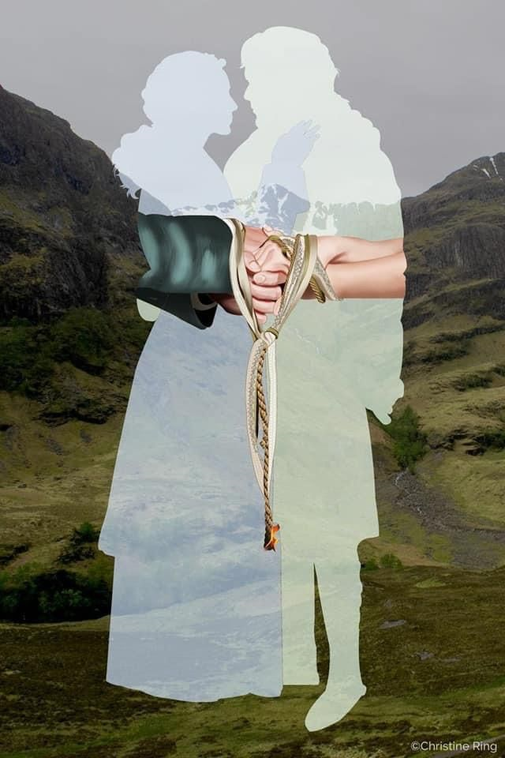

Viaje no tempo e na Escócia com Outlander!
fãs de Outlander, preparem seus kilts e espadas! A Escócia convida você a viver
uma aventura épica pelos cenários reais da série.
Mergulhe na história e romance e Visite o imponente Castelo Doune, que serviu como lar
ancestral de Jamie Fraser, o Lallybroch. Explore as ruas de Culross, a charmosa vila que
se transformou na Inverness do século XVIII e mais outros cenários fantásticos
Como: O que são os Clâs, o traje escocês, a gaita de foles, a tradição do Whisky
e até mesmo saborear os diversos pratos da culinária local, então venha
nessa
jornada única, onde vamos te mostrar tudo isso e muito mais!!!



Magia e Aventura te Esperam na Loja Wizard Boy e nos Cenários de Harry Potter na Escócia!
Bruxos, bruxas e fãs de Harry Potter, preparem suas varinhas!
Uma jornada mágica te espera na Escócia, onde você poderá explorar a Loja Wizard Boy,
um paraíso para os amantes do bruxinho mais famoso do mundo, e se encantar com os cenários
que deram vida às histórias de Hogwarts.
Descubra a Loja Wizard Boy:
Mergulhe em um mundo de magia na Loja Wizard Boy, a maior loja temática de Harry Potter da Europa.
The Devil´s Pulpit - Glasgow, UK: O Púlpito do Diabo, uma garganta natural que
emana mistério e beleza em partes iguais, escondido nas profundezas das Terras Altas
da Escócia, a apenas um curto trajeto de Glasgow. Prepare-se para se encantar com paisagens
de tirar o fôlego, histórias locais envoltas em lendas e a emoção de uma trilha desafiadora.
Almoce ao ar livre, abuse nas fotos e aprecie a tranquilidade e beleza da natureza.